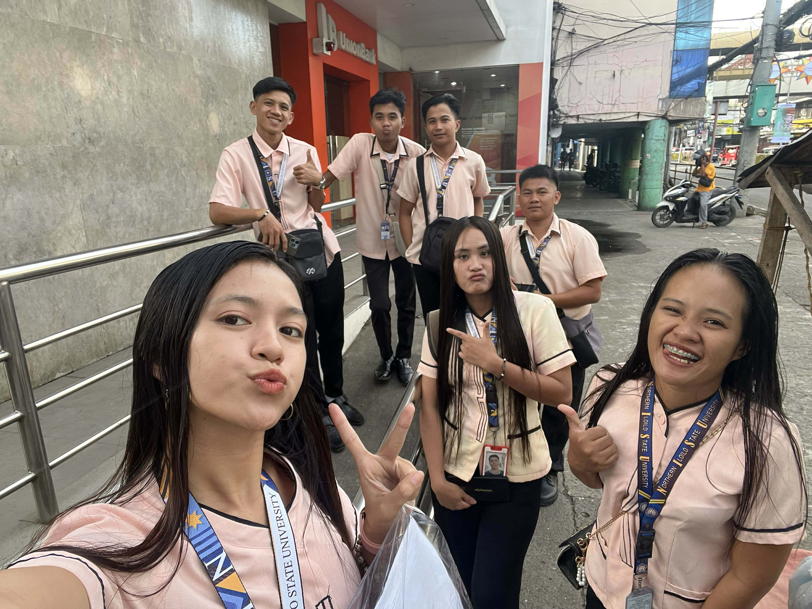
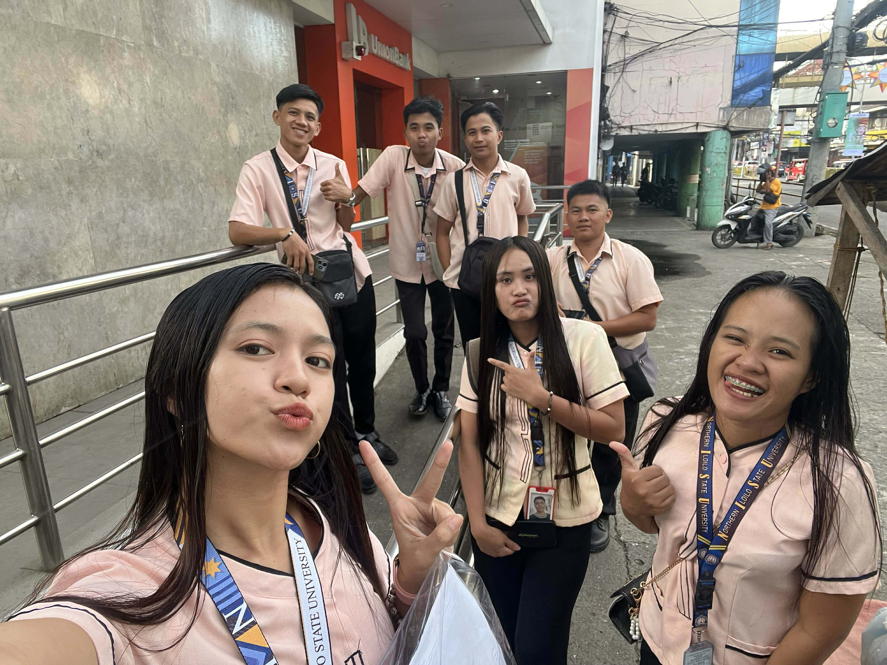

Week 1 — Orientation & First Tasks
My first week consisted of orientation, meeting my mentors, and getting used to the organization’s daily processes. I learned how to operate the timekeeping system, observed the document management procedures, and contributed by helping with data entry and organizing files.
 

Week 2 — Hands-on: Data Entry & Customer Service
During my second week of OJT, I assisted my co-trainee in encoding client information and verifying the accuracy of each entry. This experience emphasized the importance of accuracy in data handling and allowed me to gain hands-on experience while collaborating effectively as a team.
Week 3 — Assisting Clients and Improving Customer Service
In my third week, I supported clients by helping them set and manage their appointments more smoothly. I provided guidance, clarified their concerns, and made sure they understood the necessary procedures. I also assisted them in completing forms correctly to prevent mistakes. This task helped me develop stronger communication and people skills, as well as a deeper appreciation for patience and professionalism in customer interactions.
Week 4 — Assisting Clients & Encoding Information
Week 4 involved guiding clients through their requirements and accurately encoding their data. This task enhanced my attention to detail, improved my communication skills, and helped me build confidence and professionalism in client interactions.